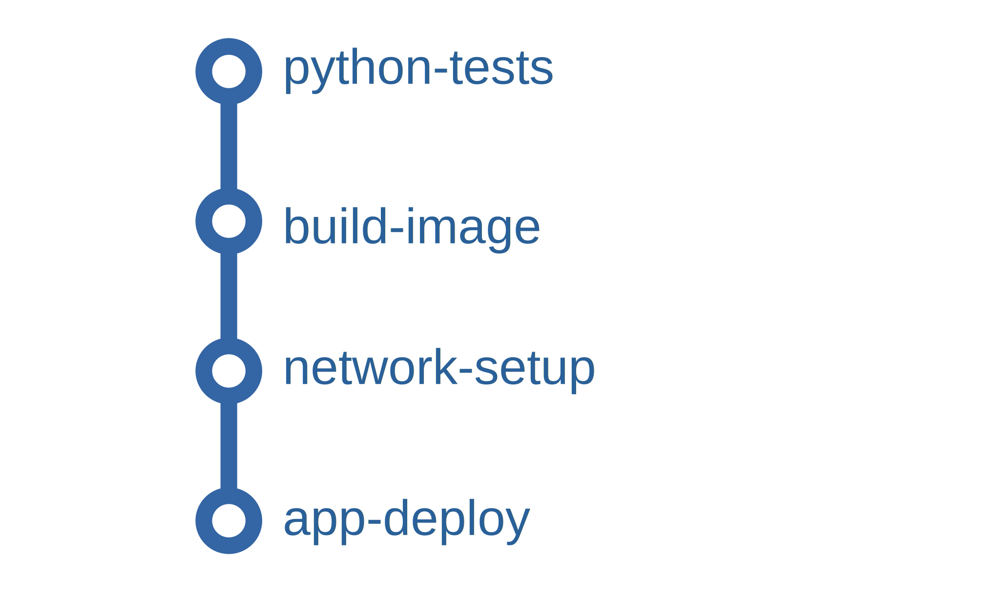

A Practical Guide to Integrating Security into Your Jenkins Pipeline
Table of Contents
In modern software development, “shifting left” is more than just a buzzword; it’s a crucial practice for building secure and reliable applications. By integrating security testing early and often in the development lifecycle, we can catch vulnerabilities before they reach production.
This guide will walk you through the practical steps of transforming a standard CI/CD pipeline into a robust DevSecOps pipeline. We’ll start with a basic Jenkins setup for a Python application and incrementally add multiple layers of automated security scanning:
- Static Application Security Testing (SAST) to analyze source code.
- Dynamic Application Security Testing (DAST) to test the running application.
- Software Composition Analysis (SCA) to find vulnerabilities in dependencies, including container image scanning.
By the end, you’ll have a clear blueprint for building security into your own CI/CD automation.
#
The Starting Point: A Basic CI/CD Pipeline
Initially, my project had a standard Jenkinsfile that automated the core tasks of testing and deployment. The pipeline had four stages:
- python-tests: Ran unit tests using
make testinside a Python container. - build-image: Built a Docker image from a Dockerfile.
- network-setup: Created a dedicated Docker network for the application to run on.
- app-deploy: Deployed the application as a container on the newly created network.
This is a great start for continuous integration, but it has a major blind spot: it does nothing to check for security vulnerabilities.

#
Layer 1: Static Analysis (SAST & SCA)
The first step in securing our pipeline is to scan the source code before we even build an image. This involves two types of static analysis.
##
SCA: Scanning Dependencies with OSV-Scanner
Software Composition Analysis (SCA) tools scan your project’s dependencies for known vulnerabilities. Since modern applications are built on a mountain of open-source libraries, this is a critical first step.
I added a new stage, OSV-scan , which uses Google’s OSV-Scanner to check the Python packages in the ./src directory and generate a JSON report.
Code Snippet: OSV-Scanner Stage
stage('OSV-scan') {
steps {
script {
sh 'echo "[*] OSV-scan scanning"'
sh 'mkdir ${REPORTS_DIR}'
// Run the OSV-Scanner Docker image
docker.image('ghcr.io/google/osv-scanner:latest').inside('--entrypoint "" ') {
// Run the OSV-Scanner command and generate the JSON report
sh "/osv-scanner --format json -r ./src > ${REPORTS_DIR}/osv-results.json || true"
}
}
}
}
Notice the || true at the end of the command. This ensures that even if vulnerabilities are found, the pipeline doesn’t stop. This allows us to collect reports from all scanners before deciding whether to fail the build.
##
SAST: Scanning Code with Bandit and Semgrep
Static Application Security Testing (SAST) tools analyze your custom source code for security flaws and bad practices. I used two different tools for broader coverage.
Bandit is a tool designed specifically for finding common security issues in Python code. The bandit-scan stage installs bandit via pip and then runs it against the ./src directory, generating an HTML report.
Code Snippet: Bandit Scan Stage
stage('bandit-scan') {
steps {
script {
sh 'echo "[*] bandit scanning"'
docker.image('python:3.9-slim-buster').inside(' -u 0 ') {
sh 'pip install bandit '
sh "bandit -r ./src -f html -o ${REPORTS_DIR}/bandit-report.html --severity-level low || true"
}
}
}
}
Semgrep is a powerful, polyglot static analysis tool that uses a vast registry of rules to find security issues, bugs, and anti-patterns. The semgrep-scan stage runs the official Semgrep image and tells it to automatically detect the project type and scan for relevant issues.
Code Snippet: Semgrep Scan Stage
stage('semgrep-scan') {
steps {
script {
sh 'echo "[*] semgrep scanning"'
docker.image('returntocorp/semgrep').inside {
sh "semgrep --config=auto . --output=${REPORTS_DIR}/semgrep-results.txt || true"
}
}
}
}
#
Layer 2: Container Image Scanning with Trivy
Scanning the source code is essential, but vulnerabilities can also exist in the operating system packages or other layers of the final Docker image. After the build-image stage, I added a trivy-scan stage to analyze the built container image.
This stage uses aquasec/trivy to scan the Docker image saved as a .tar file. It’s configured to only fail on MEDIUM, HIGH, or CRITICAL severity vulnerabilities and outputs a JSON report, which is then copied to the reports directory.
Code Snippet: Trivy Scan Stage
stage('trivy-scan') {
steps {
script {
sh 'echo "[*] Trivy scanning"'
docker.image('aquasec/trivy:latest').inside('--entrypoint "" ') {
sh 'trivy image --exit-code "1" --severity "MEDIUM,HIGH,CRITICAL" --format json --output report_trivy.json --input proj1.latest.tar || true'
sh "cp report_trivy.json ${REPORTS_DIR}/"
}
}
}
}
#
Layer 3: Dynamic Analysis (DAST) with OWASP ZAP
Static and image scanning are powerful, but they can’t find vulnerabilities that only appear when the application is running. Dynamic Application Security Testing (DAST) addresses this by probing the live application.
To do this, the pipeline first deploys the application container (proj1) and then runs a second container with the OWASP Zed Attack Proxy (ZAP) scanner. Both containers are connected to the same dedicated Docker network (ci-dast-network-${BUILD_NUMBER}) , allowing ZAP to target the application using its container name.
The zap-scan stage starts ZAP in “baseline” mode, which performs a quick, passive scan against the application’s URL. After the scan is complete, the generated HTML report is copied from the ZAP container to the Jenkins workspace for archival.
Code Snippet: ZAP Scan Stage
stage('zap-scan') {
steps {
script {
echo "Starting OWASP ZAP DAST Scan..."
// ZAP will target the app container by its name on the shared Docker network
def targetUrl = "http://${APP_CONTAINER_NAME}:${APP_INTERNAL_PORT}"
sh "docker run --name ${ZAP_CONTAINER_NAME} --network ${DOCKER_NETWORK_NAME} -p 8090:8090 -i zaproxy/zap-bare zap.sh -cmd -port 8090 -quickurl ${targetUrl} -quickout /zap/zap-report.html"
sh "docker cp ${ZAP_CONTAINER_NAME}:/zap/zap-report.html ${REPORTS_DIR}/${ZAP_HTML_REPORT}"
}
}
}
#
The Final Result: A Complete DevSecOps Pipeline
After adding all the security stages, the pipeline is far more robust. The final stage, Archive Reports, uses the archiveArtifacts step to save all the generated reports from our security tools.
Finally, the post block ensures that no matter what happens, the pipeline cleans up after itself by stopping and removing the application and ZAP containers and dismantling the Docker network.

#
Conclusion
By integrating a variety of open-source security tools directly into our Jenkinsfile, we have transformed a basic CI/CD pipeline into a powerful DevSecOps workflow. This multi-layered approach provides comprehensive, automated security feedback at every stage of the development process, from code commit to deployment. This not only makes our applications more secure but also empowers developers to find and fix issues faster, truly “shifting security left.”